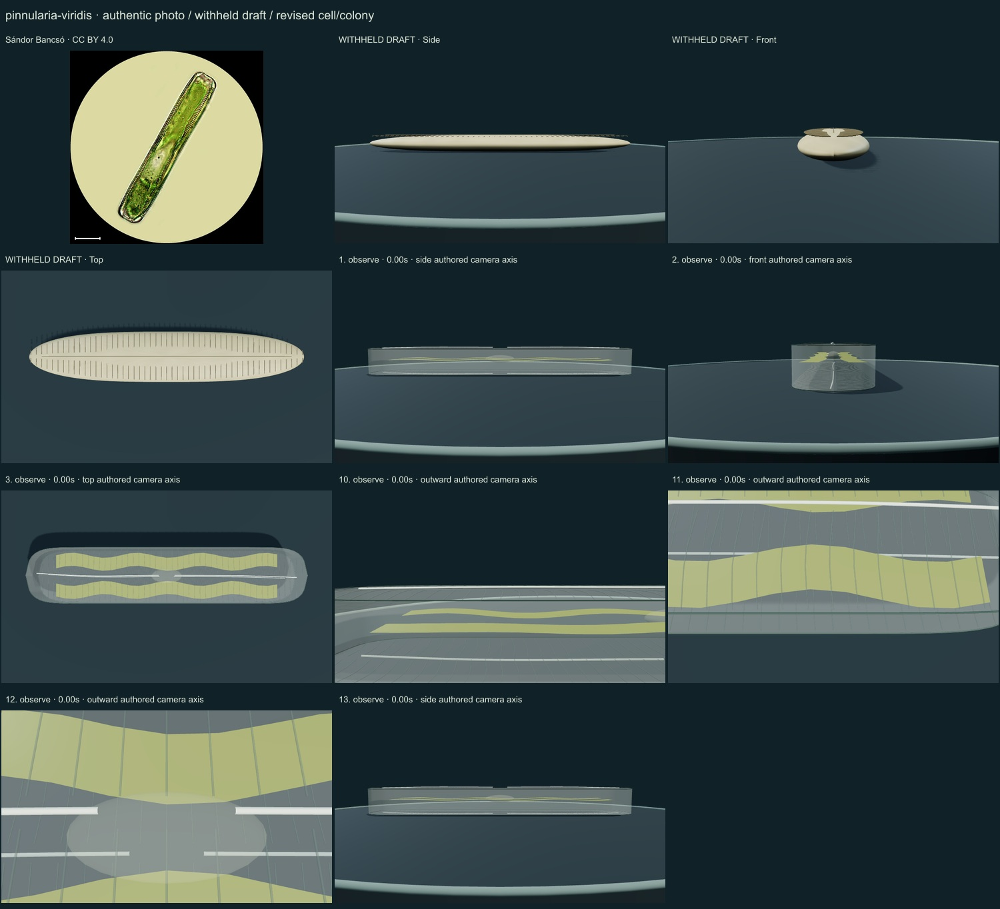
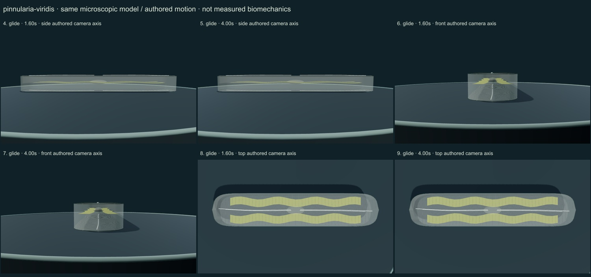

PhenoVoxel Archive · v0.6.26 · October25,2026
300 records after verified publication; all50 original held drafts have initial corrections, including all46 in the renewed foreground request.250 additional species remain to550. Release register.
Sándor Bancsó · CC BY 4.0. Sándor Bancsó2021 licensed light micrograph;20µm scale bar applies only to that photograph and does not calibrate the normalized model. Independent identification and full chloroplast/raphe anatomy remain pending. Resized inside1000 px, flattened and JPEG encoded; no generative alteration.
Exact source/download/derivative checksums and crop regions are preserved in the linked data. Tabellaria crops contain only panelg; Rhodospirillum contains only Figure1a and retains strain labels/scale. No other copyrighted reference figures are redistributed. Source photographs are authentic, with no generated organisms.
Elongate rounded paired valves and a girdle wall surround two lateral green-brown plastid ribbons. Transverse relief leaves a central axial raphe/clear-region study.
Subdued paired silica skins and finer transverse relief replace an opaque cream disc. Two olive plastid ribbons and a central clear-region cue are original numeric surfaces, not a microscopy texture.
Remaining: The selected outline, chamber/raphe architecture, plastid folds, pores and central region are simplified. Silica appears like generic transparent glass and plastids like regular ribbons; LM optical contrast and dimensions are not reproduced or calibrated. The glide lacks measured substrate/raphe mechanics.
A retained frustule translates slowly along its long axis in a short authored excursion. No measured raphe secretion, substrate interaction, speed or physiology.
Partly stylized, unmeasured educational reconstructions. Silica/envelope optics, fine ultrastructure, proportions and motion timing remain approximate. No independent specialist validation, accuracy percentage, measured biomechanics, physiological solver or simulated microscopy. Source preparation and taxonomic opinions are explicit.
13 actual final nonblank main-viewer states individually inspected on two labelled sheets: authentic micrograph, withheld draft, whole-model side/front/top, six representative motion states, three partial detail views and Observe reset.


Partly stylized, unmeasured educational reconstructions. Silica/envelope optics, fine ultrastructure, proportions and motion timing remain approximate. No independent specialist validation, accuracy percentage, measured biomechanics, physiological solver or simulated microscopy. Source preparation and taxonomic opinions are explicit. Prior293 species objects and credited wolf/tiger meshes remain unchanged. Recorded occurrences are not native ranges; two unresolved name/aggregator associations are withheld. Protista/Monera are legacy reporting conveniences, Bacteria and Archaea separate domains.
Original geometry/controller MIT. Authentic photo portions retain their credited license. Model-only frames are original rendered geometry.
Exact findings, source scopes, screenshot and photo hashes